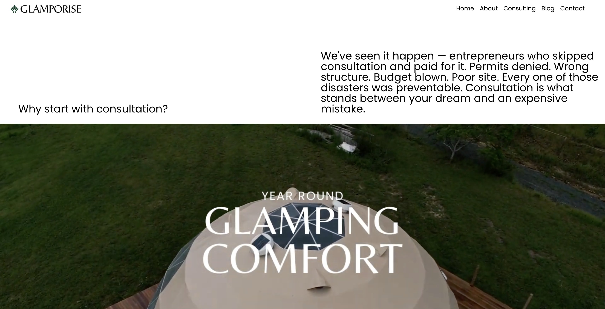

Glamporise Website
WordPress Multisite Platform
Glamporise needed more than a brochure site — it needed a platform that could carry a new brand from zero to international. I built the whole thing from scratch: the WordPress Multisite architecture, the Elementor Pro front end wearing the brand identity I'd designed, the Cloudflare security layer, the email deliverability stack, and the membership funnels that turn visitors into customers. It's live at glamporise.com↗, positioning Glamporise as Australia's most complete glamping development company.
One Domain, Every Market
The founding question: should Australia and New Zealand get separate Glamporise sites, or settle for one generic international one? I proposed a third option — the way Apple does it. One domain, with each country getting its own dedicated path: glamporise.com/au/, glamporise.com/nz/, glamporise.com/ph/. Each region is effectively its own site — unique content, products, pricing, even design — but all of it runs on a single WordPress Multisite installation, managed from one place. Country-code domains like glamporise.com.au redirect into their regional path, so there's one clear source of truth. Expanding to Singapore or the UK is no longer a web project; it's creating a subsite.
The network is live today: the flagship site serves Australia at the root, with regional subsites provisioned on the same installation, standing by for localized content as the brand expands.


The Flagship Site
The main site opens with a thesis, not a slogan — "Most glamping businesses fail before they ever open. Yours won't." — and backs it with an end-to-end consulting offer: site selection, structure choice, council approvals, construction, and post-launch support. A four-step process section, a portfolio of 5m–10m King Dome builds, a blog, and free consultation booking round out the funnel's front door. Every pixel wears the brand system — Deep Sage Emerald, Cartesius wordmark, Poppins type — from the identity I designed for it.
Fresh Build, Measured
Glamporise wasn't migrated from an old site — it was architected from the ground up, which shows in the numbers. Google PageSpeed Insights scores for the platform as built:
Hardened by Default
The platform sits behind Cloudflare with DDoS mitigation, a tuned WAF, and security hardening across DNS and SSL/TLS. Outbound email runs through Mailgun with SPF, DKIM, and DMARC configured, so booking confirmations and funnel emails actually land in inboxes instead of spam folders. Along the way I audited the plugin stack and cut seven redundant tools, consolidating their jobs onto this infrastructure — saving nearly $1,000 AUD a year.
The Business Layer
The website is also the chassis for Glamporise's customer acquisition: the Council Roadmap funnel system runs on it — a landing page plus four stage-specific funnel pages wired into GoHighLevel memberships, Stripe payments, and automated email workflows. That system converted a paid Stage 2 membership sale shortly after launch, which means the platform didn't just ship; it sold.